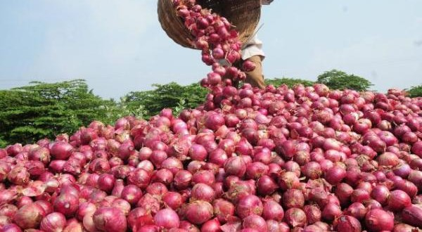

Cuando las cebollas no te hacen llorar...
12/19/2016
Lo cierto es que, de vez en cuando, puede que no llores al cortar una cebolla. Y eso estará bien, porque significará un progreso de la persona que fuiste antes, y de la que eres ahora. Pero ya, basta de hablar de temas tan densos. Hoy estamos acá para contarte todo lo que puedes hacer con las cebollas, para que puedas recuperar esas ganas de llorar cada vez que te acercas, de nuevo, a ellas. ¡Disfruta!